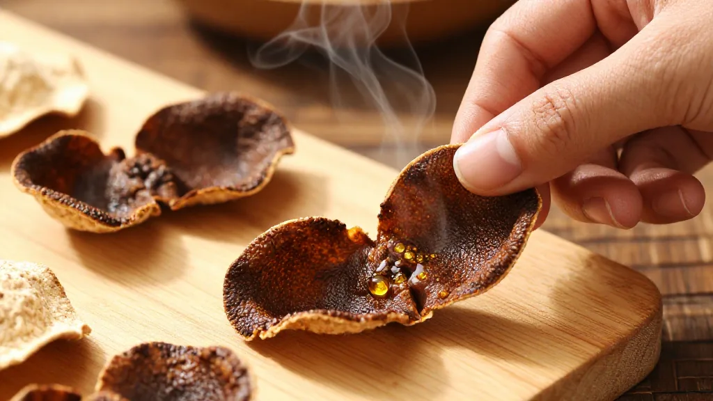

上個月，央視一則調查報道在陳皮圈炸開了鍋。「千元一斤的年份陳皮，可能連三個月都沒到。」記者暗訪多地陳皮市場，發現所謂「十年陳皮」裡有不少是「輕工藝」速成貨——用化學做舊手法，一個月就把新柑皮折騰成「三年老皮」的模樣，貼上標籤，身價翻十倍。
阿瑩姐在新會做陳皮生意二十多年，從小跟在父親身後開柑剝皮，如今在茶坑村打理著自家柑園。她經常遇到客人拿著在網上買來的「十年陳皮」上門請教，一看——外皮顏色均勻得詭異，內囊緊實得像紙板，一聞，刺鼻的工業香精味。「假的，太明顯了。」她說，「但客人不知道，被騙了還不知道。」
今天，滢滢姐就跟大家好好聊聊，怎麼用「望聞刮嘗」四招，分辨正宗新會陳皮。
第一幕：清晨的柑園

十月中旬，新會茶坑村的清晨有薄霧。
阿瑩姐一大早就來到柑園，站在凌雲塔下的田埂邊，順手摘下一顆大紅柑，掰開，果皮油胞飽滿，透光可見一粒粒金黃的油點。「看到沒？這就是茶枝柑的特性。」她把果皮翻過來，「外地皮油室稀疏，我們新會皮的油室密密麻麻，像蜂窩一樣。」
這是「望」的第一層——看油室。
正宗新會陳皮的表面，佈滿肉眼清晰可見的油室（凹下去的小點），對著陽光或燈光看，透光率很高，呈現一種半透明的質感。年份越久，油室越深沉，內囊自然風化剝落，留下清晰的「豬鬃紋」——像老木頭表面的紋理一樣，摸摸上去有細微的凹凸感。
而假陳皮呢？要么油室稀少且不均勻，要么表面過於光滑，顏色均勻得不自然。「那種黑得發亮、外表整齊得像機器壓出來的，百分之九十是工藝皮。」阿瑩姐說，「自然陳化幾十年的陳皮，顏色是漸變的，不會整張皮一個顏色。」
第二幕：老陳皮的香氣
午後，阿瑩姐從閣樓的陳化倉裡取出一片陳皮。
「來，你聞聞。」
她把一片約莫十五年的陳皮遞過來。還沒湊近，一股甘醇的藥香已經沁入鼻腔——不是新鮮橘子的酸甜，而是一種沉穩的、帶著歲月厚度的陳香。輕輕颳一下表皮，手指上留下一層淡淡的油脂，香氣更濃。
「再聞聞這個。」她又遞過一片三十年的陳皮。這一次，氣味更沉更厚，是老藥材特有的「陳香」，帶著微苦的甘。
這就是「聞」。
不同年份的新會陳皮，香氣層次分明：
- 三年到八年：帶果酸味，略帶刺激性香氣，青澀感明顯；
- 十年到二十年：果酸味漸消，清香撲鼻，有回甘；
- 二十年到四十年：甘香醇厚，帶老藥材的沉穩氣息；
- 五十年以上：陳香濃郁，是可遇不可求的珍品。
而假陳皮呢？阿瑩姐說，那種用茶湯浸泡或高溫烘烤做舊的「工藝皮」，聞起來要么有化學藥劑的刺鼻味，要么只有單一的甜膩香，毫無層次。「你拿一張假皮和一張真皮並排聞，差別就像隔夜的茶和現泡的好茶——一聞就知道。」
第三幕：指甲下的秘密

傍晚，阿瑩姐拿出幾片不同年份的陳皮，擺在一塊木板上。
「來，颳一颳。」
拿起一片約莫十二年的陳皮，用指甲輕輕颳表皮——奇蹟發生了：颳過的地方立刻泛起油光，在光線下閃閃發亮，香氣隨之溢出。「年份越短，油光越明顯。」她解釋，「因為陳皮裡的揮發油還沒大量轉化。」
再颳一片三十年的老皮，油光明顯少了很多，但香氣依然在，指尖還能感受到一層薄薄的油脂感。
「這是因為年份久了，揮發油逐漸轉化，留在皮裡的不是油脂，而是轉化後的黃酮類物質。」阿瑩姐說，「所以高年份陳皮油光少，但香味更沉。」
反過來，那些「速成皮」呢？颳一下，要么根本不出油，要么出的是一種渾濁的、帶有異味的油——「工藝皮在處理過程中早就把揮發油處理掉了，怎么可能還有油光？」
第四幕：一口嘗出真假
夜幕降臨，阿瑩姐泡了一壺陳皮水。
三片不同年份的陳皮，分別放在三個杯裡——五年、十五年、二十五年。熱水沖下去，五年陳皮湯色淺黃，入口微苦帶澀，有明顯果酸；十五年陳皮湯色金黃，入口甘甜，微辛，回甘悠長；二十五年陳皮湯色已呈琥珀紅，入口甘香醇厚，沒有任何苦澀，只有一股綿長的陳韻在舌尖化開。
「這就是『嘗』。」阿瑩姐說，「年份高的陳皮，泡十幾道水還有回甘；假陳皮泡兩道就淡如水，而且苦澀難以下嚥。」
她補充道，辨別真假還有一個小技巧：看泡過的陳皮渣。真陳皮的渣摸摸起來有韌性，不容易爛；工藝皮的渣一捏就碎，沒有彈性。
第五幕：阿瑩姐的心裡話
採訪結束時，阿瑩姐從櫃子裡取出一個鐵盒，裡面是一片用紅紙包著的陳皮。
「這是我爺爺留給我的，四十多年了。」她小心翼翼地打開一角，陳皮的表皮已呈深褐色，內囊幾乎完全剝落，但一打開包裝，滿室藥香。「這是真正的好皮，但現在市面上這種年份的，十片裡九片是假的。」
她歎了口氣：「造假的人太狠了，用外地皮冒充新會皮，用速成工藝冒充自然陳化，價格賣得比真皮還高。很多客人不懂，看顏色深就以為是老皮，結果花了「大價錢買了個寂寞。」
「所以我一直跟客人說，買陳皮不要貪便宜。你想啊，正宗新會核心產區的陳皮，十年以上的，每斤怎麼也要上千元。那些號稱『十年陳皮』卻只賣一兩百元的，不用想，肯定有問題。」
實用建議：買陳皮記住這幾點
📋 選購正宗新會陳皮五大原則
- 一、認準核心產區：新會陳皮以凌雲塔為中心，方圓兩公里內的天馬、梅江、茶坑為核心產區，品質最佳。「天馬甜、茶坑甘、梅江香」——選購時可參考產地。
- 二、不要迷信顏色：顏色不是判斷年份的唯一標準。自然陳化的陳皮顏色漸變柔和，不會整體均勻發黑。那些黑得發亮、外表過於整齊的，反而要警惕。
- 三、選擇可靠渠道：最好直接找新會當地農戶或有資質的品牌購買。阿瑩姐建議：「第一次買可以先買少量試喝，覺得好再長期合作。遇到那種不讓你試、只顧著吹噓的商家，就要小心。」
- 四、掌握四字口訣：望——看油室、看紋理、看顏色漸變；聞——聞香氣層次，不刺鼻、有陳香；颳——指甲輕颳表皮，低年份出油光，高年份油光少但香氣沉；嘗——泡水品嚐，高年份甘香醇厚、回甘持久，假皮苦澀寡淡。
- 五、注意保存：買到好皮只是第一步，保存同樣重要。陳皮要放在乾燥通風處，避免受潮發霉。每年梅雨季節前後翻曬一次，可延長保存年限。
結語
陳皮這東西，說到底是時間的藝術。
一片好陳皮，凝聚的是新會水土的精華，是匠人日復一日的晾曬翻曬，是歲月在果皮上慢慢留下的痕跡。它不是機器能批量生產的，也不是一個月能做做出來的「速成品」能替代的。
阿瑩姐常說：「陳皮是有生命的。你好好待它，它就越陳越香；你敷衍它，它就發霉變質。人與陳皮之間，也是一種緣分。」
所以，買陳皮的時候，別光看價格和外觀。用望聞刮嘗四招，用心去感受一塊皮的質地和香氣——真正的老皮，是會「說話」的。
❓ 常見問題 FAQ
- 市面約有多少陳皮是假貨？據行業數據，市面約30%至40%的「新會陳皮」實際來自外地冒充或工藝做舊，央視調查顯示部分所謂「十年陳皮」成本僅約70元/斤。
- 不同年份的陳皮價格大概是多少？2026年行情：3年陳核心產區約280至380元/斤；5年陳約580至780元/斤；10年陳約1200至1800元/斤；15年以上達萬元以上。低於市場價太多的所謂「老皮」需警惕。
- 如何快速判斷一塊陳皮是否正宗？记住「望聞刮嘗」四字口訣：看油室密度與豬鬃紋，聞香氣層次是否醇厚豐富，颳表皮看是否出油，泡水品嚐是否甘甜回甘。
- 新會陳皮哪個產區品質最好？以凌雲塔為中心的梅江、天馬、茶坑、東甲為核心產區，「天馬甜、茶坑甘、梅江香」，水土含豐富礦物質，揮發油含量可達2.5%以上。
- 陳皮買回來後如何保存？放置於乾燥通風處，避免受潮發霉；每年梅雨季前後翻曬一次；切勿放冰箱冷藏，否則受潮後易變質。